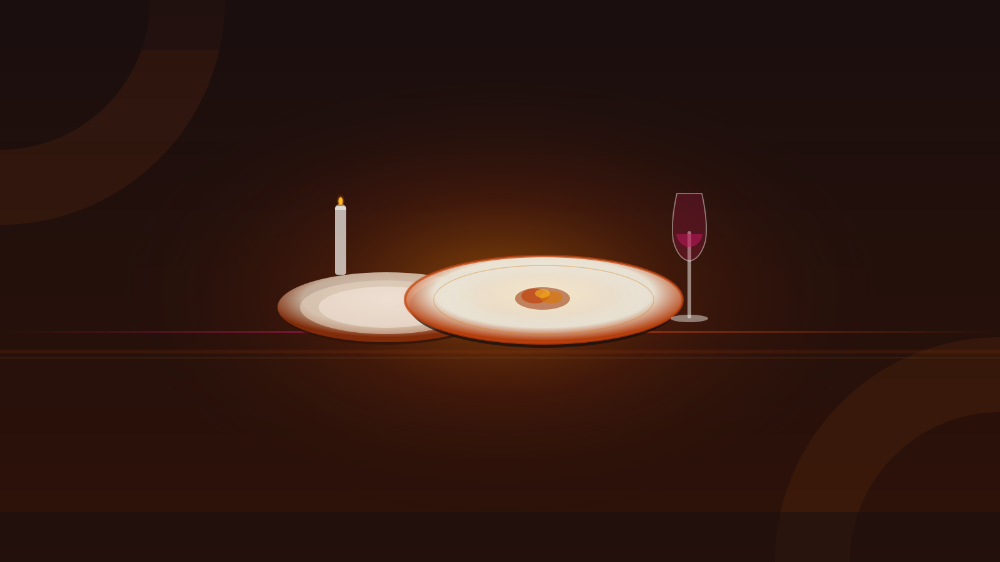
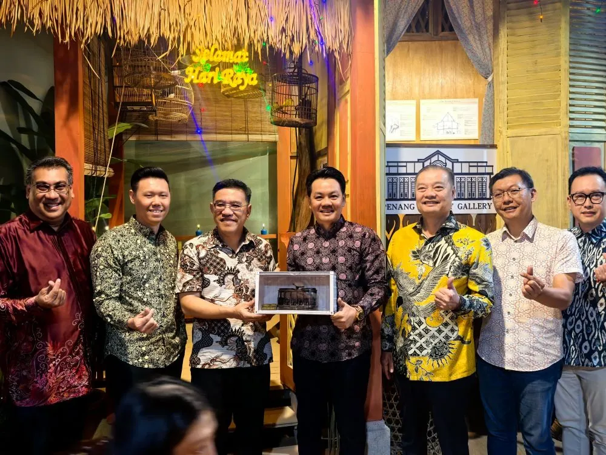
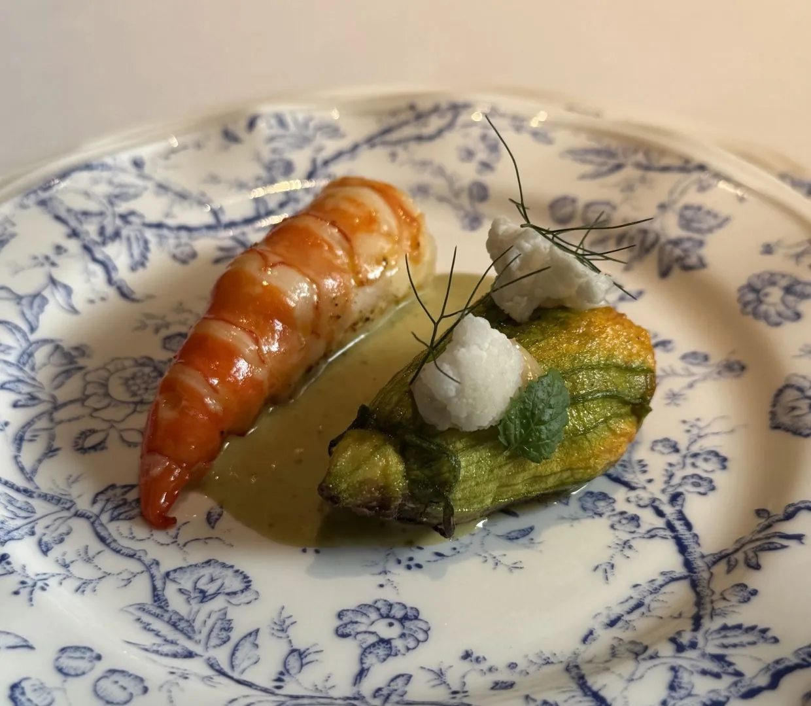
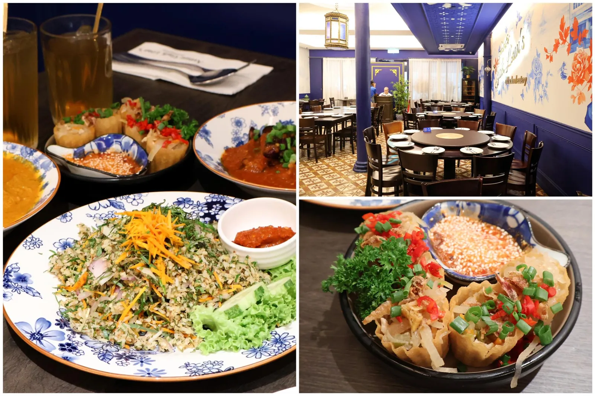
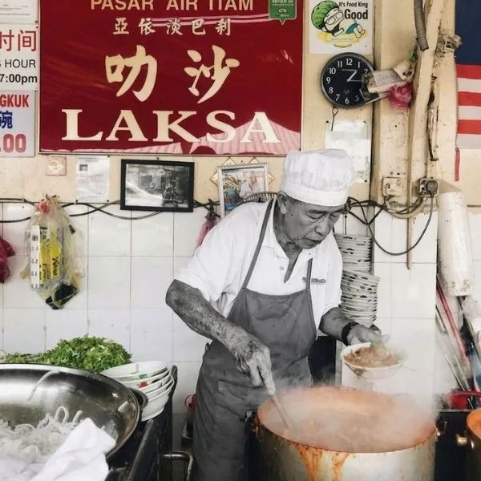
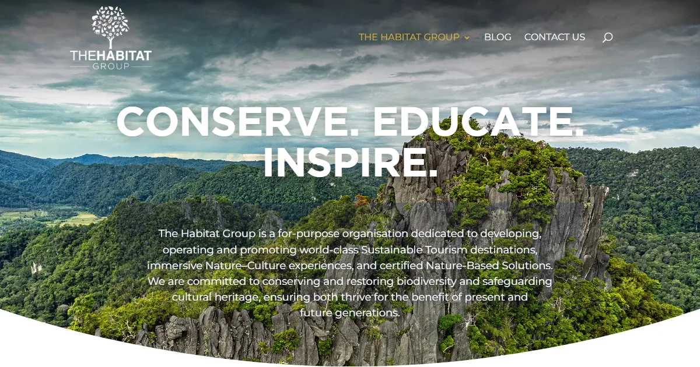

PEN → George Town: 18–20 km. GrabCar Economy ~RM26, ~25–40 min. RM26
Stay inside the UNESCO core. Walk-ability is the entire point. Heritage Wing at E&O, Blue Mansion suites, or any shophouse hostel on Lebuh Chulia.
Free CAT shuttle: 19 stops, Jetty ↔ KOMTAR, every 10–15 min, 06:00–23:45.
Bib Gourmand CLOSED SUN + MON
Siam Road Charcoal CKT — the most-decorated wok in George Town, Tue–Sat only, ~12:00–18:30. Wait >1 hour at peak. ~RM8
If CKT is a priority: arrive Friday and queue by 13:00. Saturday is your last window before Sunday closure.
If arriving late Friday: skip it. The hawker universe is deep enough without.
Chulia Street Night Hawker (now on Carnarvon St) peaks 18:30–20:30. Mother & Son Wantan Mee — nearly 50 years running. CKT RM8–9. Or head to Gurney Drive Hawker Centre (50+ stalls, open till 01:00). ~RM15/head
Stalls 71/107 at Gurney Drive for CKT; stall 79 for asam laksa. Nasi kandar at Line Clear — 24h — but ask for prices before ordering (tourist overcharging reported).

Coffee at Mugshot Cafe (Lebuh Chulia) or China House (Beach St). Then walk Armenian Street.
Zacharevic murals — freshly restored by the artist himself in Sept 2024. RESTORED 2024
Saturday evening street fair begins here later — note the setup as you pass.
BOOK AHEAD Max 24 pax per tour.
Cheong Fatt Tze — Blue Mansion: 45-min guided tour of the 130-year indigo mansion of the "Rockefeller of the East." Two tours daily: 11:00 and 15:30 only. RM25
Book online. Fills up. Missing this is the main failure mode of Saturday mornings in George Town.
Bib Gourmand Jin Kor CKT inside Joo Hooi Cafe (Penang Road). Charcoal-wok fried, celebrity-favourite.
Two doors away: Penang Road Famous Teochew Cendol — standing stall, since 1936. Coconut milk + gula melaka + pandan jelly.
CKT then cendol is the correct order of operations.
Location is the hidden differentiator: Auntie Gaik Lean's sits around the corner from the heritage walk. Au Jardin is a Grab ride away at Hin Bus Depot — and demands a wardrobe change. Both hold their star since the inaugural 2023 guide.
Pinang Peranakan Mansion (29 Church St, 09:30–17:00, RM20) + Khoo Kongsi (18 Cannon Sq, 09:00–17:00, RM10).
Pick 2 of the 3 big sites — time is shorter on this path. Skip Chew Jetty; save Street of Harmony for a quick pass on the walk back.
DRESS CODE ENFORCED Collared shirt, long pants, covered footwear for gents — no exceptions.
Return hotel, change. Grab to Hin Bus Depot (~15 min, ~RM10). Arrive at 17:00 for a 17:15 seating. Reserve via restaurant-aujardin.com up to 3 months ahead — book the day reservations open.

★ Michelin Au Jardin — 18-seat tasting menu by chef-patron Su Kim Hock. RM568++
8 courses, monthly rotation. 85% Malaysian ingredients, 65% from Penang. Signatures: Cognac & Hay Aged Duck (pre-order, RM80 deposit); all-cabbage opener; Semporna sea harvest.
Held ★ since inaugural 2023 guide. Tatler Asia: "French culinary artistry rooted in Penang terroir."
Pinang Peranakan Mansion → Khoo Kongsi → Street of Harmony (Kapitan Keling Mosque 1916, Goddess of Mercy Temple 1800, Sri Mahamariamman 1833). All free or low admission.
No wardrobe change needed. Take your time. The restaurant is around the corner.
Clan Jetties at Weld Quay — FREE Chew Jetty (most-visited, stilt houses, sunset views, 09:00–21:00) or quieter Lee / Tan / Lim / Yeoh Jetties nearby.
Quick Grab or 15-min walk back to Bishop Street for dinner. No need to rush.

★ Michelin Auntie Gaik Lean's Old School Eatery — 1 Bishop St. Malaysia's first homestyle Peranakan Michelin star. ~RM50–100/head
À la carte. Signatures: Curry Kapitan RM48, Pie Tee, Gulai Tumis (8-spice, fresh saffron), Nasi Ulam, Bee Koe Moy.
≤3 pax: walk-in. 4+ pax: reserve 1–2 weeks out, RM200 deposit. 1960s shophouse — vintage radios, ceiling fans.
Jalan Gurdwara — 3-min walk between speakeasies: Backdoor Bodega (37 Jalan Gurdwara, Asia's 50 Best #52 2024, behind a clothing store) → Good Friends Club (39 Jalan Gurdwara, Laksa Negroni RM45, Milo Peng RM30, open 20:00–01:00).
Optional extension: Magazine 63 (Penang's first speakeasy, 63 Jalan Magazine, Tue–Sun 19:00–24:00) or China House (Beach St, live jazz + 50 cakes, Fri–Sat till 01:00). Grab home ~RM7.

WEEKENDS ONLY — SAT & SUN CLOSED MON–FRI
Air Itam Asam Laksa — 70-year family stall at Air Itam market. Founder Uncle Seong (Ang Kak Seong) passed April 2026 at 77; the family carries on. Hours: 11:00–18:00 Sat–Sun only.
Grab to Air Itam (~RM12). Then Kek Lok Si Temple is a 5-min walk.
Kek Lok Si Temple — Southeast Asia's largest Buddhist temple. FREE (donations welcome). Open 08:30–17:30.
NOTE The famous CNY light-up (200k fairy lights, 20k lanterns) runs January–February only. A June visit skips the illuminations. The temple itself is worth it.
5-min walk from Air Itam stall, or combine into one Grab trip from the heritage core.

CABLE CAR NOT OPEN New Doppelmayr cable car (RM367m, 2.73km) is 28% complete as of Apr 2026 — targets December 2026 + trial period. Funicular only for June visits.
Penang Hill funicular: 06:30–23:00. RM40 normal · RM80 express. On weekends: buy express or queue 45+ min. UNESCO Biosphere Reserve (12,481 ha, designated Sept 2021).
The Habitat at the summit: Langur Way Canopy Walk + Curtis Crest Tree Top Walk. RM60 adult. Open 09:00–19:00 daily. Lunch at summit before coming down.
Option A — Penang National Park RM50 non-MY
Monkey Beach trail: open. Canopy Walkway: CLOSED INDEFINITELY. Boat to Monkey Beach RM100 return. HQ 08:00–16:30.
Option B — Teluk Bahang duo
Entopia butterfly farm (from RM65, closed Wed) + Tropical Spice Garden (from RM30, Fri–Sun 09:00–18:00) side by side.
Option C — Rest + hawker lap
Back to the UNESCO core. 888 Hokkien Mee (Lebuh Presgrave, 15:00–21:30, closed Thu). Final bowl before the flight.
Bib Gourmand picks for Sunday evening (none are closed Sunday):
→ Tek Sen (Cantonese, Carnarvon St)
→ Communal Table by Gēn
→ Gurney Drive stalls #71/#107 CKT or #79 asam laksa (till 01:00)
→ 888 Hokkien Mee (15:00–21:30, closed Thu)
NOTE Siam Road Charcoal CKT is closed Sunday. Bridge Street Prawn Noodle is closed Monday — go Saturday before lunch if you want it.